-
チュートリアル（基礎）
- RPA、RDAとは
- WinAutomationとは
- セットアップ手順
- コンソールの操作方法
- Task1 コンソールを操作してみましょう
- ProcessDesignerの操作方法
- 基本アクションについて
- Task2 アクションを設定してみましょう
- トリガー設定
- Task3 トリガーを作成してみましょう
- スケジューラー設定
- Task4 スケジューラーを作成してみましょう
- EXCEL操作
- Task5 EXCELを操作してみましょう
- マクロレコーダー
- Task6 アプリケーションを操作してみましょう
- Webレコーダー
- Task7 Webサイトを操作してみましょう
- 画像認識
- Task8 画像認識で処理を作成してみましょう
- 例外処理
- アクション一覧
- サンプル
- FAQ
- トラブルシューティング
トリガー設定
トリガー機能はWinAutomationを強力に使用するために最も重要な機能の1つです。
ここではトリガーに関する基礎知識を学びましょう。
トリガーの設定
もっとも使用するファイルトリガーを使用して、トリガーを作成してみましょう。
トリガーの作成
- コンソールからTriggersタブを選択します。
- Newボタンを押し、File Monitor Triggerを選択します。
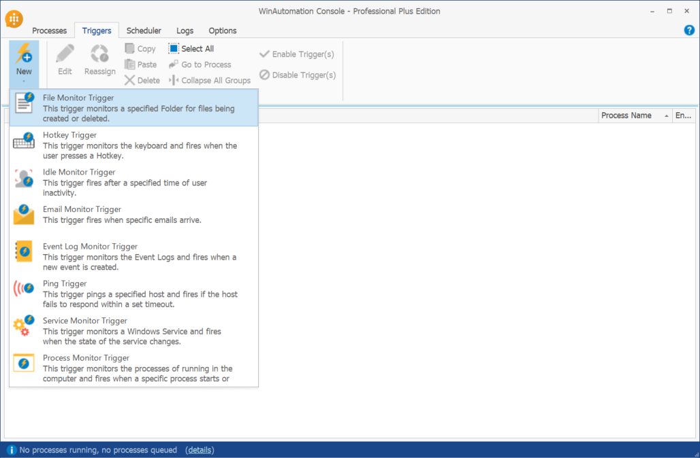
以下のようにトリガーの内容を設定します。
Folder to Monitor : デスクトップ
Files to Monitor : ＊テスト＊.xlsx ＊は半角で入力してください。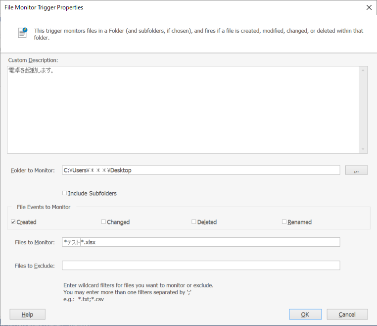
OKボタンを押下します。
起動するプロセスを選択する画面が表示されるため、Examples > 01 - Beginner > 01 - Run Calculator を選択します。
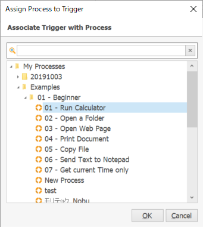以下の2ファイルを順番にデスクトップにダウンロードします。
今回は対象を「＊テスト＊.xlsx」と設定したため、ファイル名に「テスト」が含まれるファイル名のみ、トリガーが実行されます。
トリガー変数
今回使用したファイルトリガーでは、「RPAテスト_2019年.xlsx」「テスト2020年.xlsx」「RPAテスト.xlsx」のいずれでも実行が行われますが、どのファイルがきっかけとなり、プロセスが起動したかがわからないと、処理ができない場合があります。
WinAutomationではトリガーで実行されるプロセス用に、あらかじめ決められた変数が準備されています。
新規にProcess Designerを起動します。
Variables Managerを終了し、Display Messageアクションを配置し、Message To Displayに「%FileTriggerFilePath%」と設定します。
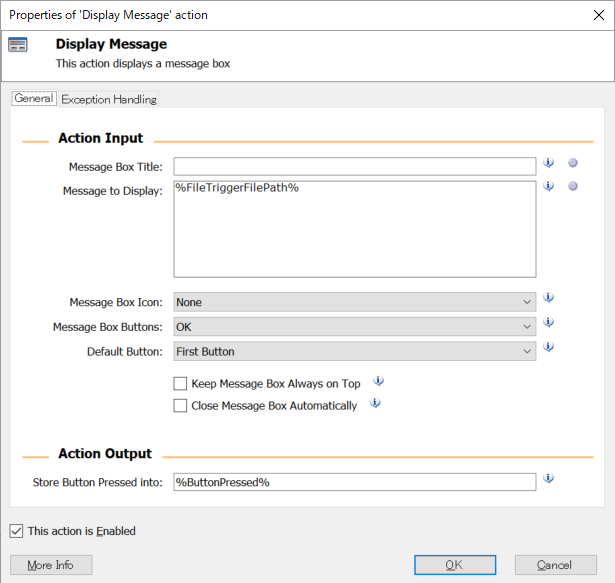プロセスを保存し、先ほど作成したトリガーの起動プロセスを今作成したプロセスに変更します。
下記ファイルをダウンロードし、デスクトップに配置します。
RPAテスト.xlsx Downloadメッセージにきっかけとなったファイルパスが表示されることを確認します。
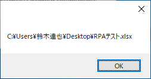メニュー > Tools > Variables Manager > Trigger Variables から、トリガー変数一覧が確認できます。
トリガーの種類
トリガーは様々な状況に対応できるよう、以下のものが準備されています。
File Monitor Trigger
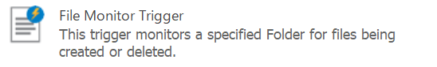
もっとも使用頻度が高いトリガーです。
指定したフォルダにファイルが作成、更新、削除された場合に実行することが可能です。
例えば、注文書EXCELをサーバーにコピーすると、自動でPDF印刷し、得意先に送付するなどの処理が可能となります。
Email Monitor Trigger
メールの受信をきっかけに実行されるトリガーです。
メールの添付ファイルをサーバーに自動保存するなどの処理が可能となります。
Event Log Monitor Trigger
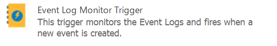
Windowsのイベントログをきっかけに実行されるトリガーです。
サーバーなどにインストールした際に、エラーをキャッチしてメールを送付するなどの処理が可能となります。
Idle Monitor Trigger
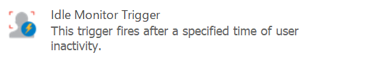
PCが一定時間無操作の場合に実行されるトリガーです。
個人情報が保存されたマシンで、操作がなかった場合に自動シャットダウンするなどが可能となります。
Hotkey Trigger
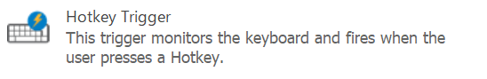
特定のキーを押下された場合に実行されるトリガーです。
ショートカット実行できるため、操作性が向上します。
ただし、ほかのショートカットキーと重複しないように設定を行う必要があります。
Ping Trigger
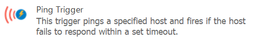
特定のネットワーク通信を監視するトリガーです。
サーバーにPingを飛ばし、通信不可になった場合に、自動的にシステム設定をメインサーバーをサブサーバーに切り替えるなどの処理が可能となります。
Service Monitor Trigger
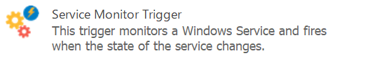
Windowsのサービスを監視するトリガーです。
特定サービスが起動・終了したタイミングで実行ができるため、常に立ち上がっている必要があるサービスの監視に使用することが可能です。
Process Monitor Trigger
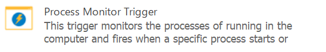
Windowsのプロセス（アプリケーション）監視するトリガーです。
アプリケーションの起動・終了をキャッチして、利用実態を取得する、トラブルの早期感知などが可能となります。